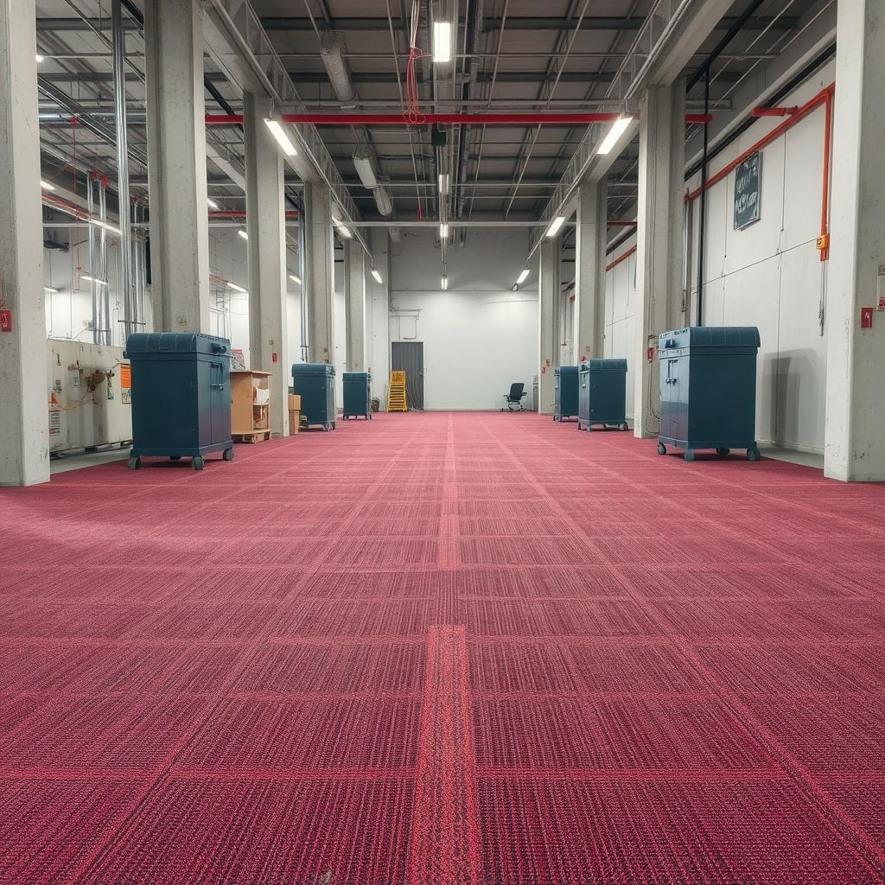
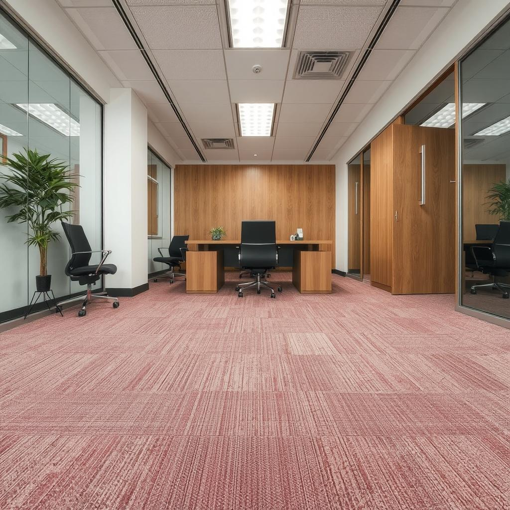
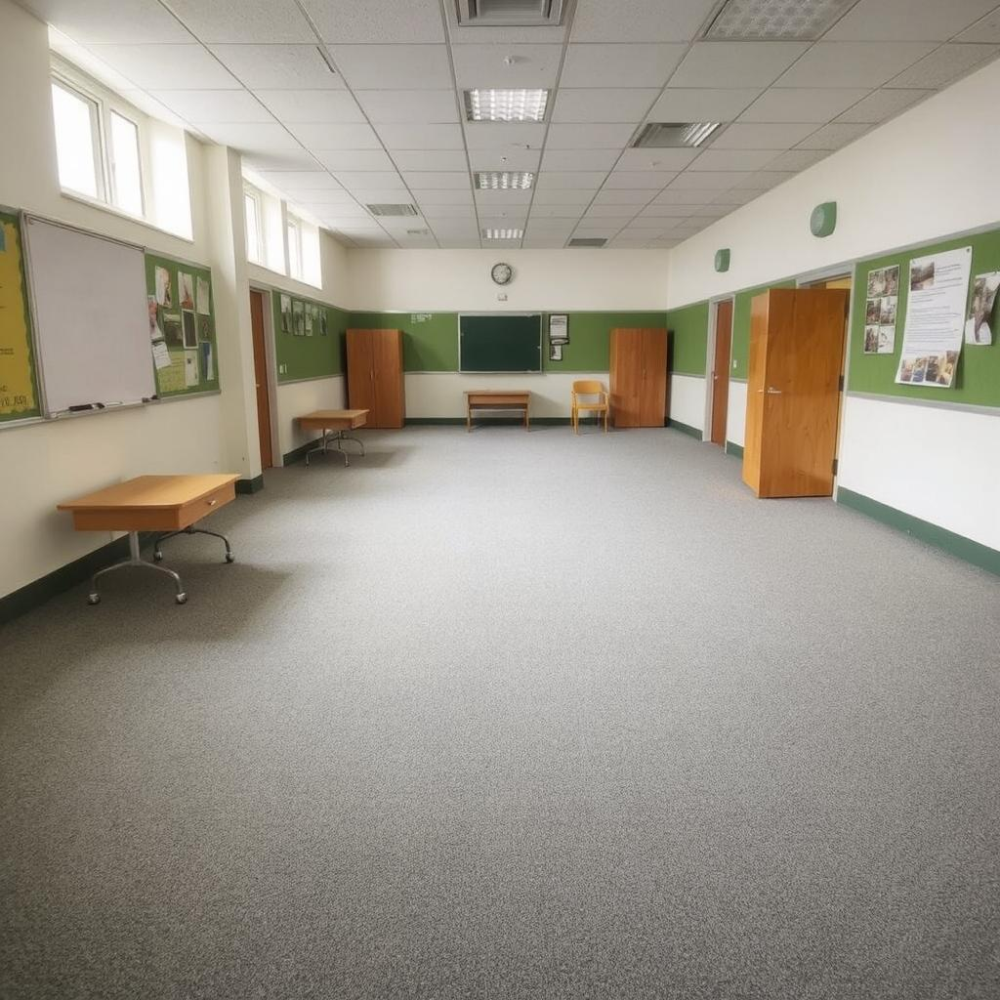

Galeria
Opis dla danego zdjęcia



Opis dla danego zdjęcia
Jesteśmy firmą z ponad 30-letnim doświadczeniem w sprzedaży i montażu wykładzin dywanowych oraz PCV. Przez lata naszej działalności zyskaliśmy zaufanie wielu lokalnych klientów, którzy doceniają naszą rzetelność, profesjonalizm i wysoką jakość usług.
Nieustannie dążymy do rozwoju, śledząc najnowsze trendy w branży oraz inwestując w nowoczesne technologie i materiały. Oferujemy szeroki wybór wykładzin dostosowanych do różnych potrzeb – zarówno do przestrzeni mieszkalnych, jak i komercyjnych. Nasz doświadczony zespół zapewnia fachowe doradztwo oraz precyzyjny montaż, dbając o każdy detal realizacji.
Stawiamy na jakość, trwałość i estetykę, ponieważ wiemy, jak ważne jest odpowiednie wykończenie wnętrz. Zapraszamy do współpracy i skorzystania z naszych usług!
Nazwa naszej firmy – STAMER – ma wyjątkową historię. Pochodzi od dwóch samochodów, które właściciel posiadał w momencie zakładania firmy: Star i Mercedes. Star symbolizuje solidność i trwałość, natomiast Mercedes kojarzy się z luksusem, precyzją i innowacją. To połączenie symbolizuje rzetelność, niezawodność i dążenie do doskonałości – wartości, które od początku przyświecają naszej działalności.
© 2025 PPHU Stamer. Wszelkie prawa zastrzeżone.